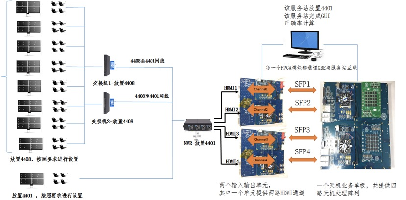

ProjectsLarge Kernel Spatial Pyramid Pooling for Image SegmentationSemantic Segmentation has been one of the core techniques of remote sensing image application. Through pixel-wise segmentation, we can have a whole idea of the objects contained in the remote sensing images, and provide foundation of further object detection, and high level segmentation extraction. Early semantic segmentations choose to use traditional machine learning algorithms, but with the development of neural networks and fully convoluted networks(FCN), using deep learning often have much better results than traditional methods. Compared with natural image processing, remote sensing image segmentation has the following problems:
Based on these properties of remote sensing images, we designed a new network component based on google’s Atrous Spatial Pyramid Pooling, which we name it as Large Kernel Spatial Pyramid Pooling. The idea of this component is to use “Large Kernel” component to extract precise feature to avoid the grid effect brought by Atrous Convolution. At the same time, Spatial Pyramid Pooling can extract multi-scale features. Project Poster News Page Quantization of Training and Inference for Fully Convoluted NetworkResearches on neural networks with discrete parameters and deployment in embedded systems have been active and promising topics. The work by Shuang Wu et al. presented a way to discretize both training and inference of neural networks. However, this work is only limited to shallow convolutional neural network. To extend his work into fully convoluted network with more layers, I am currently working on discretizing the process of forward propagation and back propagation of batch normalization. GitHubResearchDemonstration Platform of "Tianji" ChipsetThis first tage of demonstration of Tianji chipset is designed to demonstrate it's ability to process large amount of data at the same time. To be specific, the Tianji Chipset can process a input of 36-channel camera and predict hand-written numbers on every single of them simutaniously. After the 36-channel camera acquires the handwritten digital body and performs pre-processing through the “input and output board”, it is written into the “Tianji business board” by UDP protocol, and then sent to the “display platform” for display. Large Scale Implementation of Spiking Neural NetworkUnder Construction. |
{kind=link}